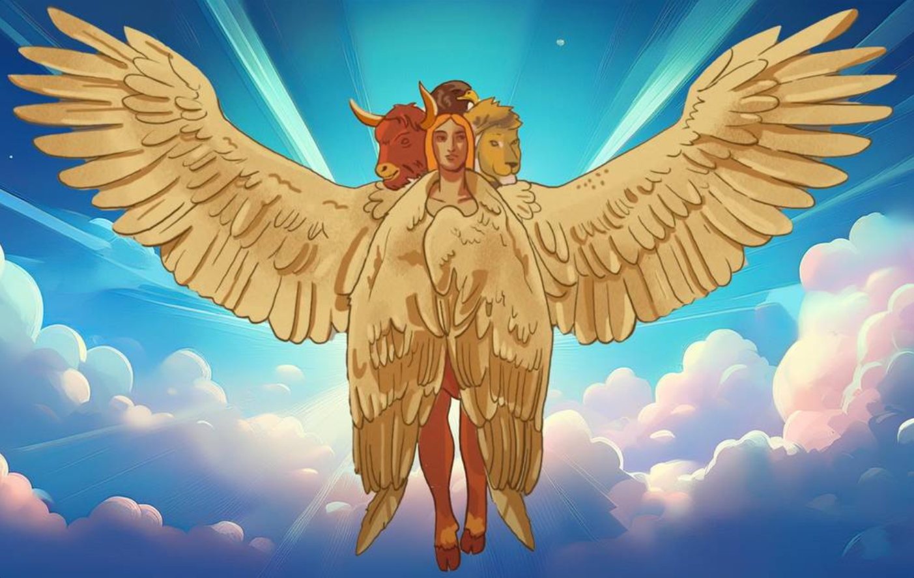
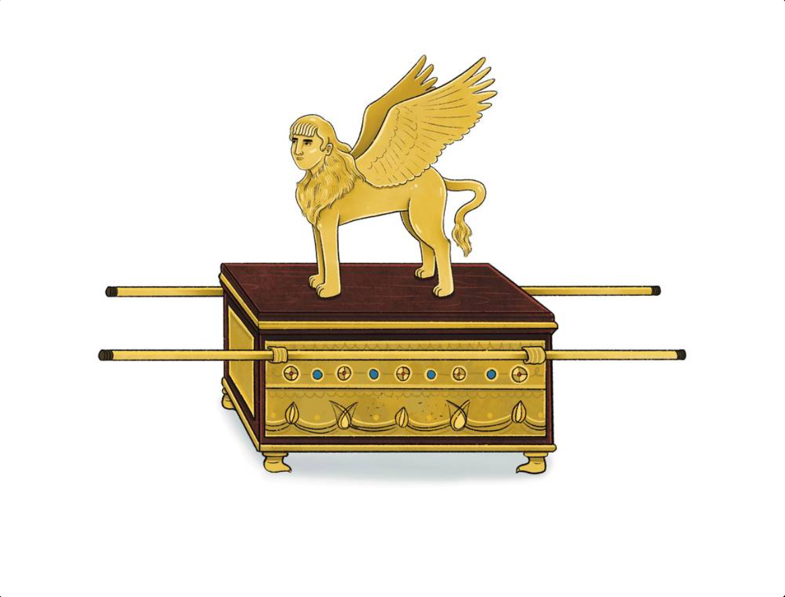
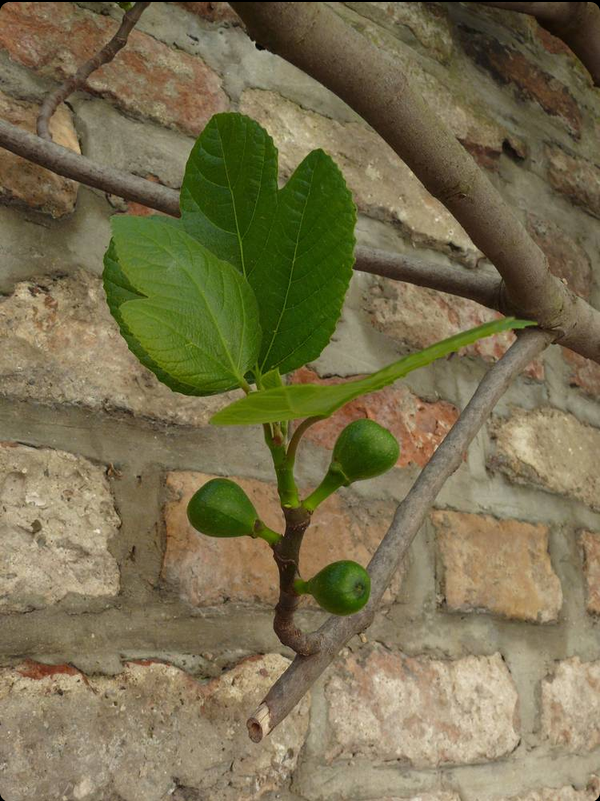
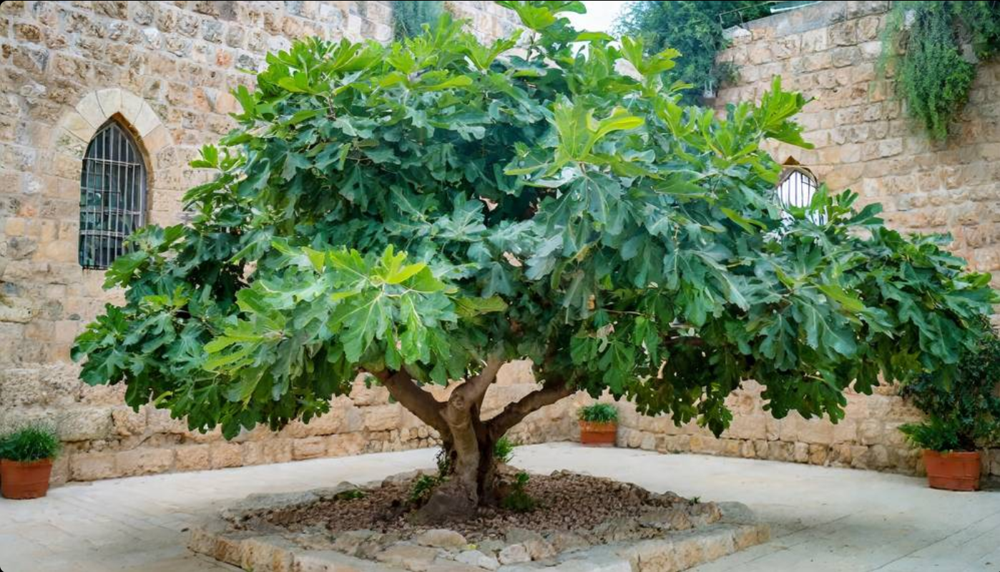
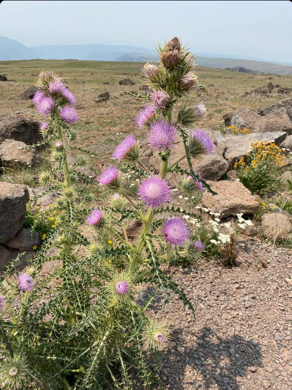
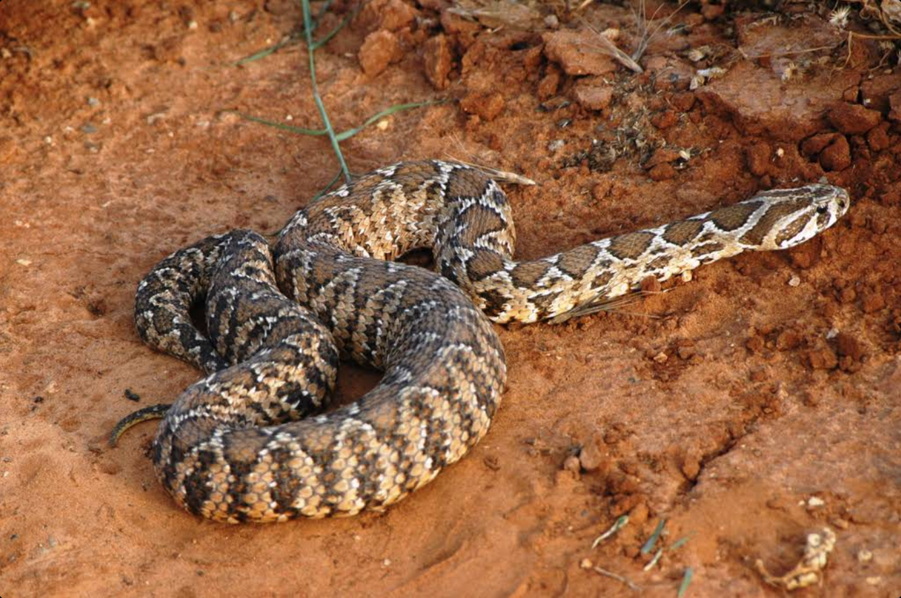

Adam was the first person whom God created. He and his wife Eve were made in the image of God.
See also: death, Eve, human
To "deceive" means to cause someone to believe something that is not true, often by telling a "lie."
See also: serpent, Satan, sin
The name of the first woman. Her name means "life" or "living."
See also: Adam, serpent, sin
In the garden of Eden, Satan took the form of a serpent when he talked to Eve and tempted her to disobey God.
See also: curse, deceive, Satan